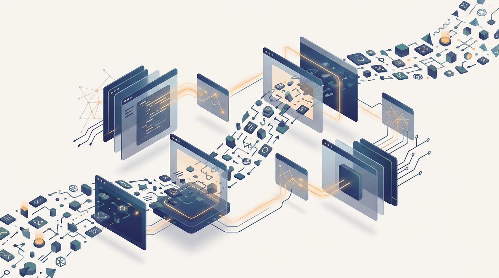

"They asked me for the average over the last minute. I gave them an answer. Then a straggler delivered an event from forty seconds ago, and now we both have to live with the fact that my answer was, briefly, a lie."
A Watermark That Has Made Peace With Late Arrivals
Every chapter of Part II so far treated data as a finite pile to be read, partitioned, and computed over; this chapter removes the assumption that the data ever stops, and that single change rewrites the whole computation, because a stream has no end over which to take a final answer. MapReduce, Spark, and the storage layer all wait for a complete input and then produce a complete output. A stream-processing system cannot wait: events arrive continuously, out of order, and sometimes late, and the system must emit answers that are correct and timely while the input is still flowing. This chapter builds the discipline that makes that possible. It opens with the difference between batch and stream processing and why latency, not throughput alone, becomes the design pressure, then defines the vocabulary of events, streams, and windows that bound an unbounded feed into computable pieces. It confronts the hardest idea in streaming, the gap between when an event happened and when it was processed, and the watermark mechanism that decides when a window is safe to close and what to do with events that arrive after it. On that foundation it builds the systems: the Kafka-style distributed log that carries events durably and in order across a partitioned cluster, and the streaming engines (Spark Structured Streaming, Flink) that compute stateful aggregations over the log. It closes with the online AI loop those systems exist to serve: computing features from a live stream, running distributed real-time inference at low latency, and detecting the concept drift that tells you a deployed model has quietly gone stale. The sharding and read-path thinking of Chapter 8 carries straight over, because a stream is a shard that never ends.
Chapter Overview
This is the fourth and final chapter of Part II, and it closes the part by inverting its founding premise. Chapters 6 through 8 built the machinery of distributed batch computation: a fixed dataset, partitioned across machines, read and reduced into a result. This chapter asks what changes when the dataset is never fixed, when records arrive one at a time, forever, and a result is needed continuously rather than once at the end. The answer touches every layer. Correctness now depends on time, on the difference between when an event occurred in the world and when the system happened to see it. Completeness becomes a judgment call rather than a fact, because you can never be certain no more late events are coming. Throughput is no longer enough; end-to-end latency, from event to answer, becomes the metric the system is judged by.
The chapter develops the subject in three movements. The first establishes the model: how stream processing differs from batch, the vocabulary of events and streams and the windows that bound them, the central distinction between event time and processing time, and the watermarks that let an engine reason about late and out-of-order data without waiting forever. The second builds the distributed systems that carry and compute the stream: the partitioned, replicated, append-only log in the style of Apache Kafka that gives many producers and consumers a durable ordered feed, and the streaming engines, Spark Structured Streaming and Apache Flink, that maintain fault-tolerant state and emit results as the data moves. The third movement turns to online AI: computing model features from a live stream with the same logic offline and online (the point where training-serving skew is won or lost), serving distributed real-time inference under tight latency budgets, and monitoring deployed models for the concept drift that batch evaluation never catches because it arrives gradually, in motion.
Read in order, the nine sections take you from "the data never stops, so the computation cannot either" to a working command of how to carry, window, and compute over an unbounded distributed stream and how to wire a live AI system on top of it: the moving-data counterpart to the static storage of Chapter 8, and the bridge from Part II's data engineering into the distributed learning of Part III.
Prerequisites
This chapter is the capstone of Part II and assumes the three chapters before it. From Chapter 6: The MapReduce Model and Distributed Algorithms you carry the idea of partitioned data and the shuffle that groups records by key; a stream is partitioned the same way, and a windowed aggregation is a shuffle that runs forever. From Chapter 7: Spark and Distributed DataFrames you carry the DataFrame and the engine that plans computations over it; Spark Structured Streaming in Section 9.6 is that same engine applied to an unbounded table, so the transformations you already know transfer almost unchanged. From Chapter 8: Distributed Storage and Data Loading you carry sharding and the read path; the Kafka-style log of Section 9.5 is a sharded, append-only store whose partitions are read sequentially, exactly the access pattern Chapter 8 favored. You also lean on Part I: the partial-failure, replication, and ordering vocabulary of Chapter 2: Distributed Systems Concepts for AI (a distributed log is a replicated, ordered append store, and exactly-once delivery is a consensus problem), and the latency and communication lenses of Chapter 3 that you use to judge whether a pipeline can answer inside its latency budget. The chapter assumes comfortable Python (the examples are PySpark and PyTorch-style), basic familiarity with time, timestamps, and timezones, and no prior experience with Kafka, Flink, or any streaming system; the mathematical background is refreshed in Appendix A: Mathematical Background.
Learning Objectives
- Explain how stream processing differs from batch processing, why an unbounded input forces continuous incremental computation, and why end-to-end latency rather than throughput alone becomes the governing metric.
- Define events, streams, and windows, and choose between tumbling, sliding, and session windows to bound an unbounded feed into computable aggregations.
- Distinguish event time from processing time, explain why their gap is the central difficulty of streaming, and reason about results that depend on which clock you use.
- Use watermarks to decide when a window is complete, and choose a policy for late and out-of-order events that trades latency against correctness deliberately.
- Describe the Kafka-style distributed log, its partitions, replication, offsets, and consumer groups, and explain how it delivers a durable, ordered, replayable stream to many consumers.
- Build a stateful streaming computation with Spark Structured Streaming or Apache Flink, including fault-tolerant state, checkpointing, and exactly-once or at-least-once delivery semantics.
- Compute model features online from a live stream with logic consistent between training and serving, serve distributed real-time inference inside a latency budget, and detect concept drift in a deployed model with distributed monitoring.
If you keep one thing from this chapter, keep this: a stream is data that never stops, so every answer is provisional, bounded by a window and gated by a watermark that decides how long to wait for late events, and the whole craft of streaming is trading latency against correctness on data that is incomplete by definition. Read forward, the sections build the idea in layers: first why an unbounded input forces incremental computation, then the windows that bound the stream, then the event-time-versus-processing-time gap and the watermark that manages it, then the distributed log that carries the events and the engines that compute over them statefully and fault-tolerantly, and finally the online AI loop of live features, real-time inference, and drift detection that those systems exist to serve. Read as a question, the chapter asks of any live system: by what clock is this correct, how long will it wait before it answers, and what happens to the event that arrives too late, and that question is the one you carry into every real-time and online learning system in the rest of the book. The roadmap below walks the nine sections that build that habit of mind.
Chapter Roadmap
- 9.1 Batch vs Stream Processing Draws the line that defines the chapter, the move from a finite dataset computed once to an unbounded feed computed continuously, and shows why latency rather than throughput alone becomes the design pressure.
- 9.2 Events, Streams, and Windows Establishes the vocabulary of streaming and the windows (tumbling, sliding, session) that bound an endless stream into finite pieces a computation can actually close and emit.
- 9.3 Event Time and Processing Time Confronts the central difficulty of streaming, the gap between when an event happened in the world and when the system saw it, and why the clock you compute against changes the answer.
- 9.4 Watermarks and Late Events Introduces the watermark, the engine's running estimate of how far event time has progressed, and the deliberate policy it enforces for when a window closes and what becomes of events that arrive after it.
- 9.5 Kafka-Style Distributed Logs Builds the substrate that carries the stream, the partitioned, replicated, append-only log with offsets and consumer groups that gives many producers and consumers a durable, ordered, replayable feed.
- 9.6 Spark Structured Streaming and Flink Builds stateful computation over the log with the two dominant engines, Spark Structured Streaming and Apache Flink, including checkpointed fault-tolerant state and exactly-once or at-least-once delivery semantics.
- 9.7 Online Feature Computation Computes model features from a live stream with logic consistent between offline training and online serving, the point where training-serving skew is either prevented or silently introduced.
- 9.8 Distributed Real-Time Inference Pipelines Wires the stream into a model, serving distributed real-time predictions inside a tight latency budget while the events keep arriving and the pipeline must never stall.
- 9.9 Concept Drift and Distributed Monitoring Closes the loop by watching the deployed model from the stream itself, detecting the concept drift that batch evaluation never catches because it arrives gradually, in motion.
Read the nine sections in order and you will hold a working command of how an unbounded distributed stream is carried, windowed, and computed, and how a live AI system is built on top of it: Section 9.1 draws the batch-versus-stream line, Sections 9.2 through 9.4 build the model of events, windows, the two clocks, and the watermark that reconciles them, Sections 9.5 and 9.6 build the distributed log and the engines that compute statefully over it, and Sections 9.7 through 9.9 close the online AI loop of live features, real-time inference, and drift detection. The thread to watch is the shuffle of Chapter 6 and the partitioning of Chapter 7: a windowed aggregation is a shuffle that never ends, and the distributed feature pipeline you design here returns as the online half of the serving systems in Chapter 26.
What's Next?
This section closes Part II. You now command the full data layer of distributed AI: the MapReduce model and its shuffle, the Spark engine and its DataFrame, the storage and read path beneath them, and now the streams that carry data in motion. With the data engineering in place, the book turns to the learning itself. Chapter 10: Distributed Optimization opens Part III: Distributed Machine Learning, and it takes the partitioned data you have learned to store and stream and asks how to train a model over it across many machines, starting from empirical risk minimization at scale and building to synchronous and asynchronous distributed SGD and the all-reduce that aggregates gradients. The shuffle you met in Chapter 6 returns there as the gradient all-reduce, the read path of Chapter 8 returns as the data-loading constraint on training throughput, and the streams of this chapter return wherever a model must learn or adapt online. Read it next, and watch the data layer become a learning system.
Bibliography & Further Reading
Foundational Papers
Kreps, J., Narkhede, N., Rao, J. "Kafka: a Distributed Messaging System for Log Processing." NetDB, 2011. microsoft.com
The original paper introducing Kafka as a distributed, partitioned, append-only log for high-throughput event processing; the source for the distributed log of Section 9.5.
Akidau, T., Bradshaw, R., Chambers, C., Chernyak, S., Fernández-Moctezuma, R. J., Lax, R., McVeety, S., Mills, D., Perry, F., Schmidt, E., Whittle, S. "The Dataflow Model: A Practical Approach to Balancing Correctness, Latency, and Cost in Massive-Scale, Unbounded, Out-of-Order Data Processing." VLDB, 2015. vldb.org
The paper that unified event-time windowing, triggers, and watermarks into one model for unbounded out-of-order data; the conceptual backbone of Sections 9.2 through 9.4.
Carbone, P., Katsifodimos, A., Ewen, S., Markl, V., Haridi, S., Tzoumas, K. "Apache Flink: Stream and Batch Processing in a Single Engine." IEEE Data Engineering Bulletin, 2015. computer.org
The system paper describing Flink's unified stream-and-batch engine with stateful, exactly-once, event-time processing; the reference for the streaming engine of Section 9.6.
Gama, J., Žliobaitė, I., Bifet, A., Pechenizkiy, M., Bouchachia, A. "A Survey on Concept Drift Adaptation." ACM Computing Surveys, 2014. dl.acm.org
The standard survey of how data distributions shift over time and how models detect and adapt to that drift; the foundation for the monitoring of Section 9.9.
Books
Kleppmann, M. "Designing Data-Intensive Applications." O'Reilly, 2017. dataintensive.net
The standard reference on data systems, whose chapters on logs, stream processing, and event time give the clearest narrative grounding for this entire chapter.
Engines and Tools
Apache Kafka. "Apache Kafka Documentation." kafka.apache.org
The official reference for the distributed log, covering topics, partitions, replication, offsets, and consumer groups; the concrete API behind Section 9.5.
Apache Spark. "Structured Streaming Programming Guide." spark.apache.org
The official guide to streaming over an unbounded table with event-time windows, watermarks, and output modes; the primary reference for the Spark half of Section 9.6.
Apache Flink. "Apache Flink Documentation." nightlies.apache.org
The official documentation for Flink's stateful stream processing, event-time semantics, watermarks, and checkpointing; the reference for the Flink half of Section 9.6.
Feast. "Feast Feature Store Documentation." docs.feast.dev
The open-source feature store that serves the same feature definitions offline and online; the production reference behind the online feature computation of Section 9.7.